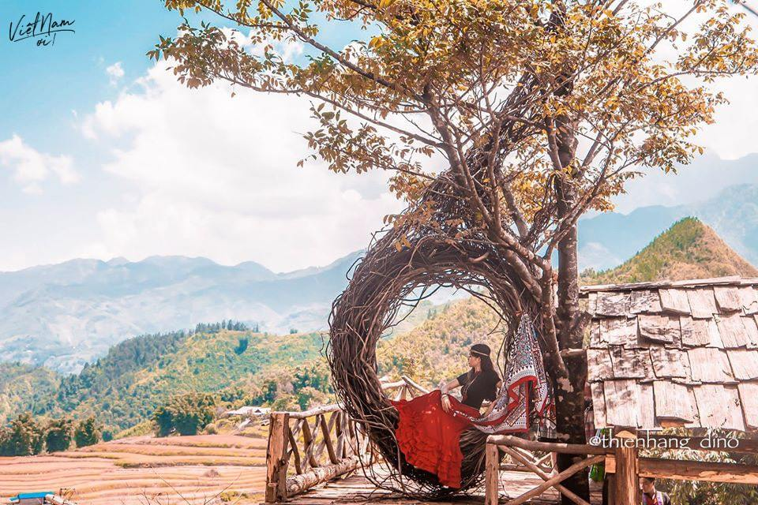

Bản Cát Cát nơi du khách không thể bỏ lỡ
Thiên đường mây Sapa – niềm tự hào của vùng núi rừng Tây Bắc đã không còn xa lạ gì với du khách trong và ngoài nước. Giữa khung cảnh thiên nhiên núi rừng hoang sơ hùng vĩ đó, có một bản làng mộc mạc nhỏ xinh khiến bất kỳ ai đến với Sapa cũng nhất định phải ghé đến. Đó chính là bản Cát Cát đầy cuốn hút với những nếp nhà gỗ đơn sơ, những con suối nhỏ chảy róc rách, những tấm thổ cẩm rực rỡ sắc màu và những những người dân tộc nhỏ bé giản đơn.
Du khách sẽ mất khoảng 30 phút đi bộ từ đỉnh dốc. Trong hành trình xuống dưới bản Cát Cát bạn có thể chiêm ngưỡng những guồng nước khổng lồ làm bằng tre được sử dụng để giã gạo. Hãy dừng lại để thưởng thức một ly cà phê, ngắm nhìn thác nước tuyệt đẹp. Bạn cũng có thể chụp ảnh với người dân địa phương trong trang phục truyền thống và mua đồ lưu niệm từ các cửa hàng dọc suốt chuyến đi.
Các địa điểm du lịch đẹp nhất Sapa
Trên đường trờ về, từ điểm dừng chân cuối cùng của bản Cát Cát đến thị trấn là hơn 3km. Sau quá trình khám phá ngôi làng với quãng đường khá dài thì đoạn đường 3km để trở về đó sẽ khiến bạn khá mệt vì thế bạn nếu sức khỏe không tốt bạn nên đi xe máy và gửi xe ở cổng bản (không được đi xe ở trong bản)